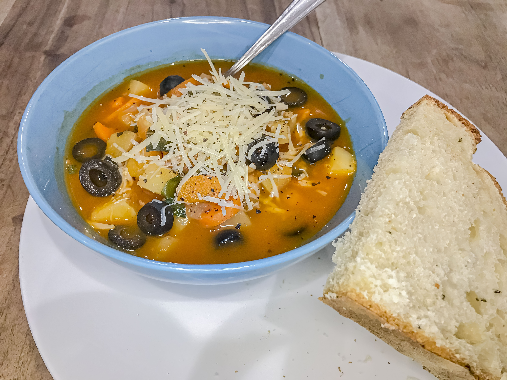

Vegetable Soup
Simple and delicious vegetable soup in a minestrone-inspired tomato broth.
Lentil Sweet Potato Soup
Sweet and hearty soup, perfect when paired with a thick slice of artisan bread.
Rosemary Tomato Pasta
This pasta's creamy, flavorful, protein-packed sauce is a breeze to make.
Mango Chutney and Black Bean Quinoa Salad
Spicy, sweet, and savory come together in the perfect blend of flavor in this delicious salad.
Black Bean Burger Patties
A classic staple vegetarian recipe, easily customizable to your own tastes to yield a uniquely perfect burger.
Butternut Squash with Candied Pecans
This sweet roasted squash is a delightful way to bring autumn flavors to the dinner table.

Tomato Pasta Salad
This tangy salad with a kick of spice is bursting at the seams with flavor!